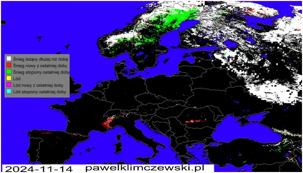
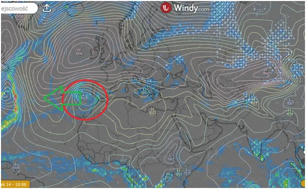

Bantustany pod przymusem płacą znajomym królika, a naród widzi płomienie wokół planety.
14 listopada, zwykle w tej porze roku do Europy docierają ostatnie cieple podmuchy z południa. Przed nami "wielkie mieszanie" powietrza między Arktyką i ciepłymi morzami. Orkany czyli cyklony rodzące się nad Europą i w sąsiednim oceanie, są typowe w tym okresie. Silne sztormy na Bałtyku to norma, ale oczywiście czytamy w gadzinowej prasie, że "planeta płonie" mimo że zamarza. Tym razem ciepłe wiatry dotarły do północnej Skandynawii, a nad południem Europy mamy w górach sporo śniegu.

Ciekawostką jest niż na zachód od Hiszpanii, który zamiast przynieść do Europy wilgoć i ciepło, szuka energii do swego istnienia na środku oceanu i wędruje w lewo, odsuwając się od Europy.

Ochładza to i tak już chłodny wschodni Atlantyk, co nie wróży nic dobrego tylko suszę zimą. Jak często podkreślam w Kosmosie i na Ziemi nic nie jest przesądzone, ale nie jest dobrze. Mimo zmiany narracji w USA nasz lokalny salonik uparcie bredzi o walce z klimatem, bo to daje pretekst do wydawania bajońskich sum na działania bezsensowne, które obsługują znajomi królika. Obawiam się, że USA wypisze się z paryskiego klubu "walki z klimatem", co da amerykańskiej gospodarce mocny impuls, to my pozostaniemy jako "frajerzy", co to będą płacić za oddychanie i podniosą konkurencyjność gospodarki USA. Główny wojownik klimatyczny jest liderem do fotela prezydenckiego, co jest szaleństwem samym w sobie. Widać naród widzi te płomienie wokół planety.
Paweł Klimczewski